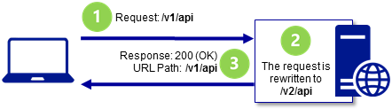
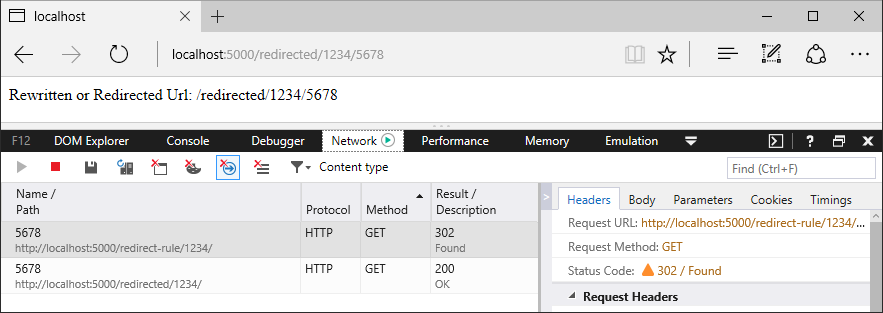
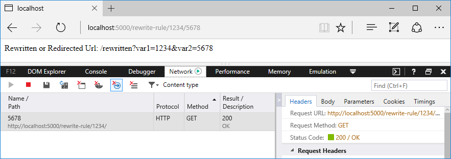
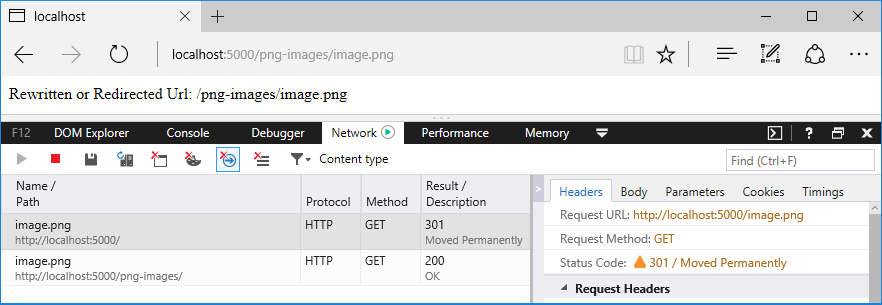
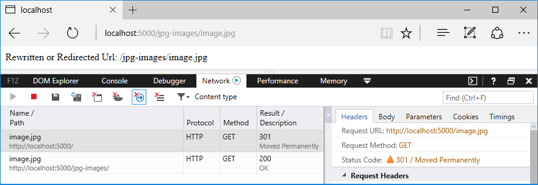

URL Rewriting Middleware in ASP.NET Core
By Luke Latham and Mikael Mengistu
URL rewriting is the act of modifying request URLs based on one or more predefined rules. URL rewriting creates an abstraction between resource locations and their addresses so that the locations and addresses are not tightly linked. There are several scenarios where URL rewriting is valuable:
- Moving or replacing server resources temporarily or permanently while maintaining stable locators for those resources
- Splitting request processing across different apps or across areas of one app
- Removing, adding, or reorganizing URL segments on incoming requests
- Optimizing public URLs for Search Engine Optimization (SEO)
- Permitting the use of friendly public URLs to help people predict the content they will find by following a link
- Redirecting insecure requests to secure endpoints
- Preventing image hotlinking
You can define rules for changing the URL in several ways, including regex, Apache mod_rewrite module rules, IIS Rewrite Module rules, and using custom rule logic. This document introduces URL rewriting with instructions on how to use URL Rewriting Middleware in ASP.NET Core apps.
Note
URL rewriting can reduce the performance of an app. Where feasible, you should limit the number and complexity of rules.
URL redirect and URL rewrite
The difference in wording between URL redirect and URL rewrite may seem subtle at first but has important implications for providing resources to clients. ASP.NET Core's URL Rewriting Middleware is capable of meeting the need for both.
A URL redirect is a client-side operation, where the client is instructed to access a resource at another address. This requires a round-trip to the server, and the redirect URL returned to the client appears in the browser's address bar when the client makes a new request for the resource. If /resource is redirected to /different-resource, the client requests /resource, and the server responds that the client should obtain the resource at /different-resource with a status code indicating that the redirect is either temporary or permanent. The client executes a new request for the resource at the redirect URL.

When redirecting requests to a different URL, you indicate whether the redirect is permanent or temporary. The 301 (Moved Permanently) status code is used where the resource has a new, permanent URL and you wish to instruct the client that all future requests for the resource should use the new URL. The client may cache the response when a 301 status code is received. The 302 (Found) status code is used where the redirection is temporary or generally subject to change, such that the client shouldn't store and reuse the redirect URL in the future. For more information, see RFC 2616: Status Code Definitions.
A URL rewrite is a server-side operation to provide a resource from a different resource address. Rewriting a URL doesn't require a round-trip to the server. The rewritten URL isn't returned to the client and won't appear in the browser's address bar. When /resource is rewritten to /different-resource, the client requests /resource, and the server internally fetches the resource at /different-resource. Although the client might be able to retrieve the resource at the rewritten URL, the client won't be informed that the resource exists at the rewritten URL when it makes its request and receives the response.

URL rewriting sample app
You can explore the features of the URL Rewriting Middleware with the URL rewriting sample app. The app applies rewrite and redirect rules and shows the rewritten or redirected URL.
When to use URL Rewriting Middleware
Use URL Rewriting Middleware when you are unable to use the URL Rewrite module with IIS on Windows Server, the Apache mod_rewrite module on Apache Server, URL rewriting on Nginx, or your app is hosted on HTTP.sys server (formerly called WebListener). The main reasons to use the server-based URL rewriting technologies in IIS, Apache, or Nginx are that the middleware doesn't support the full features of these modules and the performance of the middleware probably won't match that of the modules. However, there are some features of the server modules that don't work with ASP.NET Core projects, such as the IsFile and IsDirectory constraints of the IIS Rewrite module. In these scenarios, use the middleware instead.
Package
To include the middleware in your project, add a reference to the Microsoft.AspNetCore.Rewrite package. This feature is available for apps that target ASP.NET Core 1.1 or later.
Extension and options
Establish your URL rewrite and redirect rules by creating an instance of the RewriteOptions class with extension methods for each of your rules. Chain multiple rules in the order that you would like them processed. The RewriteOptions are passed into the URL Rewriting Middleware as it's added to the request pipeline with app.UseRewriter(options);.
using (StreamReader apacheModRewriteStreamReader = File.OpenText("ApacheModRewrite.txt"))
using (StreamReader iisUrlRewriteStreamReader = File.OpenText("IISUrlRewrite.xml"))
{
var options = new RewriteOptions()
.AddRedirect("redirect-rule/(.*)", "redirected/$1")
.AddRewrite(@"^rewrite-rule/(\d+)/(\d+)", "rewritten?var1=$1&var2=$2", skipRemainingRules: true)
.AddApacheModRewrite(apacheModRewriteStreamReader)
.AddIISUrlRewrite(iisUrlRewriteStreamReader)
.Add(MethodRules.RedirectXMLRequests)
.Add(new RedirectImageRequests(".png", "/png-images"))
.Add(new RedirectImageRequests(".jpg", "/jpg-images"));
app.UseRewriter(options);
}
URL redirect
Use AddRedirect to redirect requests. The first parameter contains your regex for matching on the path of the incoming URL. The second parameter is the replacement string. The third parameter, if present, specifies the status code. If you don't specify the status code, it defaults to 302 (Found), which indicates that the resource is temporarily moved or replaced.
using (StreamReader apacheModRewriteStreamReader = File.OpenText("ApacheModRewrite.txt"))
using (StreamReader iisUrlRewriteStreamReader = File.OpenText("IISUrlRewrite.xml"))
{
var options = new RewriteOptions()
.AddRedirect("redirect-rule/(.*)", "redirected/$1")
.AddRewrite(@"^rewrite-rule/(\d+)/(\d+)", "rewritten?var1=$1&var2=$2", skipRemainingRules: true)
.AddApacheModRewrite(apacheModRewriteStreamReader)
.AddIISUrlRewrite(iisUrlRewriteStreamReader)
.Add(MethodRules.RedirectXMLRequests)
.Add(new RedirectImageRequests(".png", "/png-images"))
.Add(new RedirectImageRequests(".jpg", "/jpg-images"));
app.UseRewriter(options);
}
In a browser with developer tools enabled, make a request to the sample app with the path /redirect-rule/1234/5678. The regex matches the request path on redirect-rule/(.*), and the path is replaced with /redirected/1234/5678. The redirect URL is sent back to the client with a 302 (Found) status code. The browser makes a new request at the redirect URL, which appears in the browser's address bar. Since no rules in the sample app match on the redirect URL, the second request receives a 200 (OK) response from the app and the body of the response shows the redirect URL. A roundtrip is made to the server when a URL is redirected.
Warning
Be cautious when establishing your redirect rules. Your redirect rules are evaluated on each request to the app, including after a redirect. It's easy to accidently create a loop of infinite redirects.
Original Request: /redirect-rule/1234/5678

The part of the expression contained within parentheses is called a capture group. The dot (.) of the expression means match any character. The asterisk (*) indicates match the preceding character zero or more times. Therefore, the last two path segments of the URL, 1234/5678, are captured by capture group (.*). Any value you provide in the request URL after redirect-rule/ is captured by this single capture group.
In the replacement string, captured groups are injected into the string with the dollar sign ($) followed by the sequence number of the capture. The first capture group value is obtained with $1, the second with $2, and they continue in sequence for the capture groups in your regex. There's only one captured group in the redirect rule regex in the sample app, so there's only one injected group in the replacement string, which is $1. When the rule is applied, the URL becomes /redirected/1234/5678.
URL redirect to a secure endpoint
Use AddRedirectToHttps to redirect HTTP requests to the same host and path using HTTPS (https://). If the status code isn't supplied, the middleware defaults to 302 (Found). If the port isn't supplied, the middleware defaults to null, which means the protocol changes to https:// and the client accesses the resource on port 443. The example shows how to set the status code to 301 (Moved Permanently) and change the port to 5001.
var options = new RewriteOptions()
.AddRedirectToHttps(301, 5001);
app.UseRewriter(options);
Use AddRedirectToHttpsPermanent to redirect insecure requests to the same host and path with secure HTTPS protocol (https:// on port 443). The middleware sets the status code to 301 (Moved Permanently).
The sample app is capable of demonstrating how to use AddRedirectToHttps or AddRedirectToHttpsPermanent. Add the extension method to the RewriteOptions. Make an insecure request to the app at any URL. Dismiss the browser security warning that the self-signed certificate is untrusted.
Original Request using AddRedirectToHttps(301, 5001): /secure

Original Request using AddRedirectToHttpsPermanent: /secure

URL rewrite
Use AddRewrite to create a rules for rewriting URLs. The first parameter contains your regex for matching on the incoming URL path. The second parameter is the replacement string. The third parameter, skipRemainingRules: {true|false}, indicates to the middleware whether or not to skip additional rewrite rules if the current rule is applied.
using (StreamReader apacheModRewriteStreamReader = File.OpenText("ApacheModRewrite.txt"))
using (StreamReader iisUrlRewriteStreamReader = File.OpenText("IISUrlRewrite.xml"))
{
var options = new RewriteOptions()
.AddRedirect("redirect-rule/(.*)", "redirected/$1")
.AddRewrite(@"^rewrite-rule/(\d+)/(\d+)", "rewritten?var1=$1&var2=$2", skipRemainingRules: true)
.AddApacheModRewrite(apacheModRewriteStreamReader)
.AddIISUrlRewrite(iisUrlRewriteStreamReader)
.Add(MethodRules.RedirectXMLRequests)
.Add(new RedirectImageRequests(".png", "/png-images"))
.Add(new RedirectImageRequests(".jpg", "/jpg-images"));
app.UseRewriter(options);
}
Original Request: /rewrite-rule/1234/5678

The first thing you notice in the regex is the carat (^) at the beginning of the expression. This means that matching starts at the beginning of the URL path.
In the earlier example with the redirect rule, redirect-rule/(.*), there's no carat at the start of the regex; therefore, any characters may precede redirect-rule/ in the path for a successful match.
| Path | Match |
|---|---|
/redirect-rule/1234/5678 |
Yes |
/my-cool-redirect-rule/1234/5678 |
Yes |
/anotherredirect-rule/1234/5678 |
Yes |
The rewrite rule, ^rewrite-rule/(\d+)/(\d+), only matches paths if they start with rewrite-rule/. Notice the difference in matching between the rewrite rule below and the redirect rule above.
| Path | Match |
|---|---|
/rewrite-rule/1234/5678 |
Yes |
/my-cool-rewrite-rule/1234/5678 |
No |
/anotherrewrite-rule/1234/5678 |
No |
Following the ^rewrite-rule/ portion of the expression, there are two capture groups, (\d+)/(\d+). The \d signifies match a digit (number). The plus sign (+) means match one or more of the preceding character. Therefore, the URL must contain a number followed by a forward-slash followed by another number. These capture groups are injected into the rewritten URL as $1 and $2. The rewrite rule replacement string places the captured groups into the querystring. The requested path of /rewrite-rule/1234/5678 is rewritten to obtain the resource at /rewritten?var1=1234&var2=5678. If a querystring is present on the original request, it's preserved when the URL is rewritten.
There's no roundtrip to the server to obtain the resource. If the resource exists, it's fetched and returned to the client with a 200 (OK) status code. Because the client isn't redirected, the URL in the browser address bar doesn't change. As far as the client is concerned, the URL rewrite operation never occurred.
Note
Use skipRemainingRules: true whenever possible, because matching rules is an expensive process and reduces app response time. For the fastest app response:
- Order your rewrite rules from the most frequently matched rule to the least frequently matched rule.
- Skip the processing of the remaining rules when a match occurs and no additional rule processing is required.
Apache mod_rewrite
Apply Apache mod_rewrite rules with AddApacheModRewrite. Make sure that the rules file is deployed with the app. For more information and examples of mod_rewrite rules, see Apache mod_rewrite.
A StreamReader is used to read the rules from the ApacheModRewrite.txt rules file.
using (StreamReader apacheModRewriteStreamReader = File.OpenText("ApacheModRewrite.txt"))
using (StreamReader iisUrlRewriteStreamReader = File.OpenText("IISUrlRewrite.xml"))
{
var options = new RewriteOptions()
.AddRedirect("redirect-rule/(.*)", "redirected/$1")
.AddRewrite(@"^rewrite-rule/(\d+)/(\d+)", "rewritten?var1=$1&var2=$2", skipRemainingRules: true)
.AddApacheModRewrite(apacheModRewriteStreamReader)
.AddIISUrlRewrite(iisUrlRewriteStreamReader)
.Add(MethodRules.RedirectXMLRequests)
.Add(new RedirectImageRequests(".png", "/png-images"))
.Add(new RedirectImageRequests(".jpg", "/jpg-images"));
app.UseRewriter(options);
}
The sample app redirects requests from /apache-mod-rules-redirect/(.\*) to /redirected?id=$1. The response status code is 302 (Found).
# Rewrite path with additional sub directory
RewriteRule ^/apache-mod-rules-redirect/(.*) /redirected?id=$1 [L,R=302]
Original Request: /apache-mod-rules-redirect/1234

Supported server variables
The middleware supports the following Apache mod_rewrite server variables:
- CONN_REMOTE_ADDR
- HTTP_ACCEPT
- HTTP_CONNECTION
- HTTP_COOKIE
- HTTP_FORWARDED
- HTTP_HOST
- HTTP_REFERER
- HTTP_USER_AGENT
- HTTPS
- IPV6
- QUERY_STRING
- REMOTE_ADDR
- REMOTE_PORT
- REQUEST_FILENAME
- REQUEST_METHOD
- REQUEST_SCHEME
- REQUEST_URI
- SCRIPT_FILENAME
- SERVER_ADDR
- SERVER_PORT
- SERVER_PROTOCOL
- TIME
- TIME_DAY
- TIME_HOUR
- TIME_MIN
- TIME_MON
- TIME_SEC
- TIME_WDAY
- TIME_YEAR
IIS URL Rewrite Module rules
To use rules that apply to the IIS URL Rewrite Module, use AddIISUrlRewrite. Make sure that the rules file is deployed with the app. Don't direct the middleware to use your web.config file when running on Windows Server IIS. With IIS, these rules should be stored outside of your web.config to avoid conflicts with the IIS Rewrite module. For more information and examples of IIS URL Rewrite Module rules, see Using Url Rewrite Module 2.0 and URL Rewrite Module Configuration Reference.
A StreamReader is used to read the rules from the IISUrlRewrite.xml rules file.
using (StreamReader apacheModRewriteStreamReader = File.OpenText("ApacheModRewrite.txt"))
using (StreamReader iisUrlRewriteStreamReader = File.OpenText("IISUrlRewrite.xml"))
{
var options = new RewriteOptions()
.AddRedirect("redirect-rule/(.*)", "redirected/$1")
.AddRewrite(@"^rewrite-rule/(\d+)/(\d+)", "rewritten?var1=$1&var2=$2", skipRemainingRules: true)
.AddApacheModRewrite(apacheModRewriteStreamReader)
.AddIISUrlRewrite(iisUrlRewriteStreamReader)
.Add(MethodRules.RedirectXMLRequests)
.Add(new RedirectImageRequests(".png", "/png-images"))
.Add(new RedirectImageRequests(".jpg", "/jpg-images"));
app.UseRewriter(options);
}
The sample app rewrites requests from /iis-rules-rewrite/(.*) to /rewritten?id=$1. The response is sent to the client with a 200 (OK) status code.
<rewrite>
<rules>
<rule name="Rewrite segment to id querystring" stopProcessing="true">
<match url="^iis-rules-rewrite/(.*)$" />
<action type="Rewrite" url="rewritten?id={R:1}" appendQueryString="false"/>
</rule>
</rules>
</rewrite>
Original Request: /iis-rules-rewrite/1234

If you have an active IIS Rewrite Module with server-level rules configured that would impact your app in undesirable ways, you can disable the IIS Rewrite Module for an app. For more information, see Disabling IIS modules.
Unsupported features
The middleware released with ASP.NET Core 2.x doesn't support the following IIS URL Rewrite Module features:
- Outbound Rules
- Custom Server Variables
- Wildcards
- LogRewrittenUrl
Supported server variables
The middleware supports the following IIS URL Rewrite Module server variables:
- CONTENT_LENGTH
- CONTENT_TYPE
- HTTP_ACCEPT
- HTTP_CONNECTION
- HTTP_COOKIE
- HTTP_HOST
- HTTP_REFERER
- HTTP_URL
- HTTP_USER_AGENT
- HTTPS
- LOCAL_ADDR
- QUERY_STRING
- REMOTE_ADDR
- REMOTE_PORT
- REQUEST_FILENAME
- REQUEST_URI
Note
You can also obtain an IFileProvider via a PhysicalFileProvider. This approach may provide greater flexibility for the location of your rewrite rules files. Make sure that your rewrite rules files are deployed to the server at the path you provide.
PhysicalFileProvider fileProvider = new PhysicalFileProvider(Directory.GetCurrentDirectory());
Method-based rule
Use Add(Action<RewriteContext> applyRule) to implement your own rule logic in a method. The RewriteContext exposes the HttpContext for use in your method. The context.Result determines how additional pipeline processing is handled.
| context.Result | Action |
|---|---|
RuleResult.ContinueRules (default) |
Continue applying rules |
RuleResult.EndResponse |
Stop applying rules and send the response |
RuleResult.SkipRemainingRules |
Stop applying rules and send the context to the next middleware |
using (StreamReader apacheModRewriteStreamReader = File.OpenText("ApacheModRewrite.txt"))
using (StreamReader iisUrlRewriteStreamReader = File.OpenText("IISUrlRewrite.xml"))
{
var options = new RewriteOptions()
.AddRedirect("redirect-rule/(.*)", "redirected/$1")
.AddRewrite(@"^rewrite-rule/(\d+)/(\d+)", "rewritten?var1=$1&var2=$2", skipRemainingRules: true)
.AddApacheModRewrite(apacheModRewriteStreamReader)
.AddIISUrlRewrite(iisUrlRewriteStreamReader)
.Add(MethodRules.RedirectXMLRequests)
.Add(new RedirectImageRequests(".png", "/png-images"))
.Add(new RedirectImageRequests(".jpg", "/jpg-images"));
app.UseRewriter(options);
}
The sample app demonstrates a method that redirects requests for paths that end with .xml. If you make a request for /file.xml, it's redirected to /xmlfiles/file.xml. The status code is set to 301 (Moved Permanently). For a redirect, you must explicitly set the status code of the response; otherwise, a 200 (OK) status code is returned and the redirect won't occur on the client.
public static void RedirectXMLRequests(RewriteContext context)
{
var request = context.HttpContext.Request;
// Because we're redirecting back to the same app, stop
// processing if the request has already been redirected
if (request.Path.StartsWithSegments(new PathString("/xmlfiles")))
{
return;
}
if (request.Path.Value.EndsWith(".xml", StringComparison.OrdinalIgnoreCase))
{
var response = context.HttpContext.Response;
response.StatusCode = StatusCodes.Status301MovedPermanently;
context.Result = RuleResult.EndResponse;
response.Headers[HeaderNames.Location] =
"/xmlfiles" + request.Path + request.QueryString;
}
}
Original Request: /file.xml

IRule-based rule
Use Add(IRule) to implement your own rule logic in a class that derives from IRule. Using an IRule provides greater flexibility over using the method-based rule approach. Your derived class may include a constructor, where you can pass in parameters for the ApplyRule method.
using (StreamReader apacheModRewriteStreamReader = File.OpenText("ApacheModRewrite.txt"))
using (StreamReader iisUrlRewriteStreamReader = File.OpenText("IISUrlRewrite.xml"))
{
var options = new RewriteOptions()
.AddRedirect("redirect-rule/(.*)", "redirected/$1")
.AddRewrite(@"^rewrite-rule/(\d+)/(\d+)", "rewritten?var1=$1&var2=$2", skipRemainingRules: true)
.AddApacheModRewrite(apacheModRewriteStreamReader)
.AddIISUrlRewrite(iisUrlRewriteStreamReader)
.Add(MethodRules.RedirectXMLRequests)
.Add(new RedirectImageRequests(".png", "/png-images"))
.Add(new RedirectImageRequests(".jpg", "/jpg-images"));
app.UseRewriter(options);
}
The values of the parameters in the sample app for the extension and the newPath are checked to meet several conditions. The extension must contain a value, and the value must be .png, .jpg, or .gif. If the newPath isn't valid, an ArgumentException is thrown. If you make a request for image.png, it's redirected to /png-images/image.png. If you make a request for image.jpg, it's redirected to /jpg-images/image.jpg. The status code is set to 301 (Moved Permanently), and the context.Result is set to stop processing rules and send the response.
public class RedirectImageRequests : IRule
{
private readonly string _extension;
private readonly PathString _newPath;
public RedirectImageRequests(string extension, string newPath)
{
if (string.IsNullOrEmpty(extension))
{
throw new ArgumentException(nameof(extension));
}
if (!Regex.IsMatch(extension, @"^\.(png|jpg|gif)$"))
{
throw new ArgumentException("Invalid extension", nameof(extension));
}
if (!Regex.IsMatch(newPath, @"(/[A-Za-z0-9]+)+?"))
{
throw new ArgumentException("Invalid path", nameof(newPath));
}
_extension = extension;
_newPath = new PathString(newPath);
}
public void ApplyRule(RewriteContext context)
{
var request = context.HttpContext.Request;
// Because we're redirecting back to the same app, stop
// processing if the request has already been redirected
if (request.Path.StartsWithSegments(new PathString(_newPath)))
{
return;
}
if (request.Path.Value.EndsWith(_extension, StringComparison.OrdinalIgnoreCase))
{
var response = context.HttpContext.Response;
response.StatusCode = StatusCodes.Status301MovedPermanently;
context.Result = RuleResult.EndResponse;
response.Headers[HeaderNames.Location] =
_newPath + request.Path + request.QueryString;
}
}
}
Original Request: /image.png

Original Request: /image.jpg

Regex examples
| Goal | Regex String & Match Example |
Replacement String & Output Example |
|---|---|---|
| Rewrite path into querystring | ^path/(.*)/(.*)/path/abc/123 |
path?var1=$1&var2=$2/path?var1=abc&var2=123 |
| Strip trailing slash | (.*)/$/path/ |
$1/path |
| Enforce trailing slash | (.*[^/])$/path |
$1//path/ |
| Avoid rewriting specific requests | (.*[^(\.axd)])$Yes: /resource.htmNo: /resource.axd |
rewritten/$1/rewritten/resource.htm/resource.axd |
| Rearrange URL segments | path/(.*)/(.*)/(.*)path/1/2/3 |
path/$3/$2/$1path/3/2/1 |
| Replace a URL segment | ^(.*)/segment2/(.*)/segment1/segment2/segment3 |
$1/replaced/$2/segment1/replaced/segment3 |
Additional resources
- Application Startup
- Middleware
- Regular expressions in .NET
- Regular expression language - quick reference
- Apache mod_rewrite
- Using Url Rewrite Module 2.0 (for IIS)
- URL Rewrite Module Configuration Reference
- IIS URL Rewrite Module Forum
- Keep a simple URL structure
- 10 URL Rewriting Tips and Tricks
- To slash or not to slash